PEARL Open X Sim Command Loop
[COMPUTED][CONFIDENCE: HIGH]Strict evidence audit for command contracts, RoboTwin robot-action smokes, an Isaac task-semantic command bundle, AgenticSim intake, fallback gates, diagnosis, and ownership.
Acceptance 8 / 8[COMPUTED] [CONFIDENCE: HIGH] Typed package and bounded second backend complete
What is complete
Six command contracts, three scripted RoboTwin robot-action command-loop smokes, one five-command Isaac task-semantic bundle, a 745-repository Isaac source audit, RTX 5090 runtime baseline, and 12 exact-commit candidate probes: 11 local noncommercial academic-use admissions, 6 strict open-source provenance closures, 5 accepted rows with license advisories, and 1 runtime blocker.
What is not proven
Isaac robot embodiment or joint-action policy transfer, source-asset or material parity, learned-policy quality from scripted smokes, redistribution rights for advisory-marked third-party assets, WobbleGo asset recovery, broad Any Sim coverage, or video2sim-forge execution.
Isaac Five-Command Task Bundle
Same normalized `place_on(container, plate)` semantics; backend-native execution with declared transfer losses.
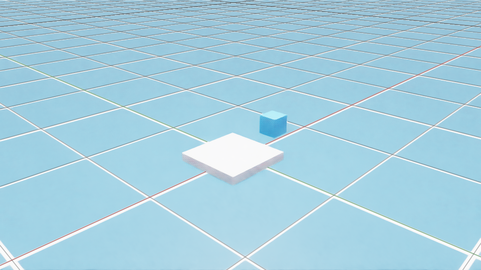
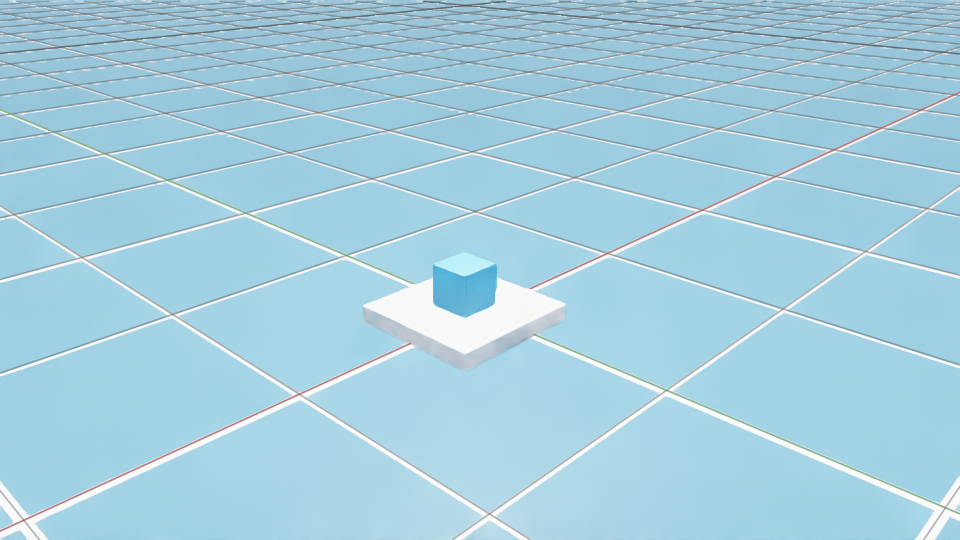
Target verifier passed
- Trace
- 120 backend-native state/action steps
- Video
- 24/24 unique decoded frames
- Relation
- horizontal error 0.00023756474973744843 m
- Support gap
- 2.0056962968251213e-07 m
- Bundle
- 34 hashed files
Declared losses
- asset geometry is represented by primitive proxies
- the robot embodiment and joint-action policy are not transferred
- materials and lighting are not matched
- verifier semantics are matched at relation level but implementation code differs
| Command | Status | Boundary |
|---|---|---|
/gen-env | pass | The target scene uses Isaac primitives and proves executable scene construction, not source-asset identity or material parity. |
/collect | pass | This is a backend-native Isaac collection with a scripted object-space expert, not robot control or learned-policy evidence. |
/evaluate | pass | The result verifies the normalized place_on relation for this scripted Isaac execution; it is not learned-policy quality. |
/diagnose | pass | Not-applicable categories are retained rather than reported as absent failure modes. |
/transfer | pass | This is an executed task-semantic transfer with a target verifier, not policy transfer, asset identity, visual parity, or evidence that transfer improves learned-policy reuse. |
AgenticSim Isaac Intake
Pinned source audit plus current RTX 5090 execution evidence.
745Repositories normalized
308Detected OSS licenses
84Current environment sources
64Static candidates
11 / 12Technical runtime passes
11 / 11Academic-use admissions
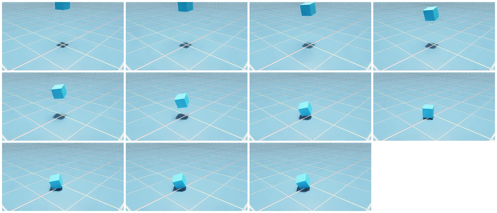
Isaac Sim 5.1 Runtime Baseline
- GPU
- NVIDIA GeForce RTX 5090, 580.159.03, 32607 MiB
- Gates
- physics · RTX render · CUDA · video = pass
- Video
- 32 frames · 32 unique · 12.0 fps · 2.666667 s
- Motion
- 31 moving transitions · 32 unique positions
- Source commit
6d952560870b0a9b71f707f0476d28425bfab256
[KNOWN][CONFIDENCE: HIGH]This is continuous simulator-step capture, not an endpoint interpolation.
Academic-use accepted: the named task passed the bounded runtime gate.Provenance advisory: retained for traceability; it does not block local noncommercial academic use.Runtime blocked: the named task did not reach reset/step/render.
OpenArm Reach
enactic/openarm_isaac_lab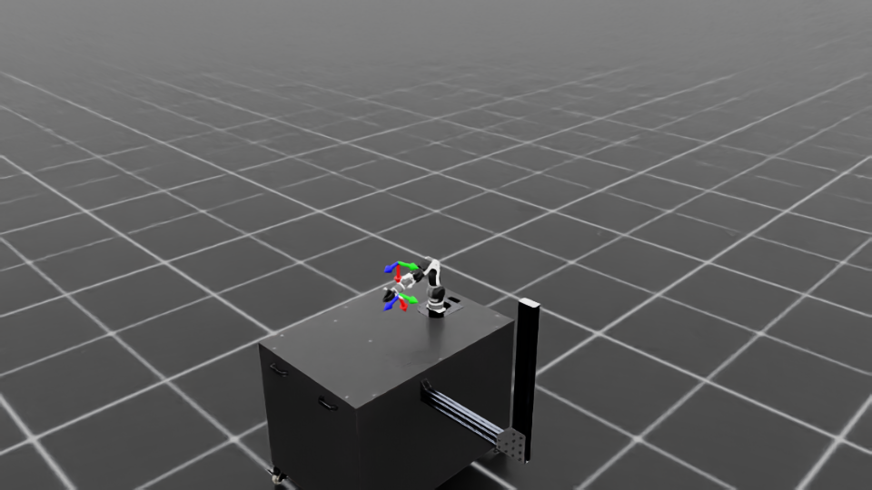
- Task
Isaac-Reach-OpenArm-Play-v0- Commit
bad82e23716e- Steps
- 20 / 20
- Provenance
- strict OSS closure
- Install source/openarm as an editable package.
- Add the repository root to PYTHONPATH because candidate modules import source.openarm paths.
- Package-only execution is not portable until repository-root imports are removed upstream.
Neuromeka Indy7
neuromeka-robotics/nrmk_isaaclab_public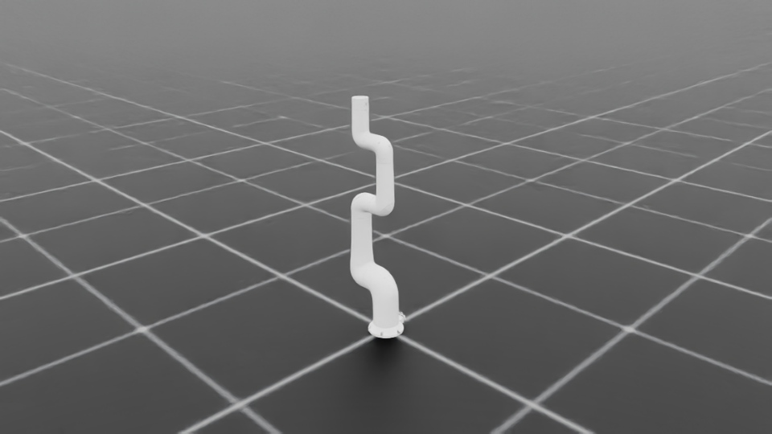
- Task
Indy-Deploy- Commit
8284fb3cccde- Steps
- 20 / 20
- Provenance
- strict OSS closure
- Set PYNPUT_BACKEND=dummy for headless execution.
- Install the undeclared runtime dependencies tensordict and rsl-rl-lib==3.0.1.
- Materialize the Indy7 Git LFS object before task creation.
- The package metadata does not declare tensordict or rsl-rl-lib.
- Other tasks still require their own Git LFS assets and hardcoded-path review.
WobbleGo
noxrick91/WobbleGoCORE USD UNAVAILABLE
USD file not found at path at: 'https://data.noxcaw.com/downloads/wobble-go/usds/WobbleGo.usd'.- Task
WobbleGo-Direct-v0- Commit
061fb498c8b4- Steps
- 0 / 20
- Provenance
- unavailable_and_unverified
- The core WobbleGo USD is not present in the repository and the configured remote URL did not resolve in Isaac Sim.
RobotLab Go2
fan-ziqi/robot_lab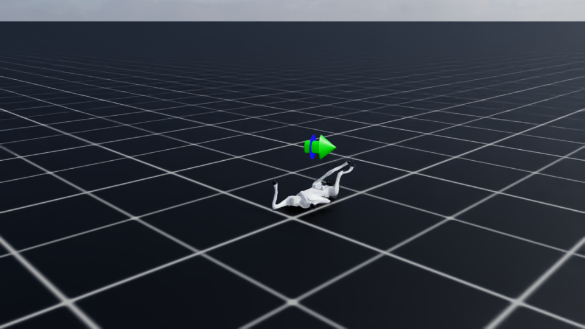
- Task
RobotLab-Isaac-Velocity-Flat-Unitree-Go2-v0- Commit
500399ed75f5- Steps
- 20 / 20
- Provenance
- strict OSS closure
- Install the declared but unpinned cusrl dependency; the bounded probe used cusrl==1.2.0 without the all extra.
- The bundled Go2 meshes cite unitree_ros provenance but do not carry a separate asset license notice.
- The zero-action screenshot proves composition and physics, not a trained locomotion policy.
Unitree RL Lab Go2
unitreerobotics/unitree_rl_lab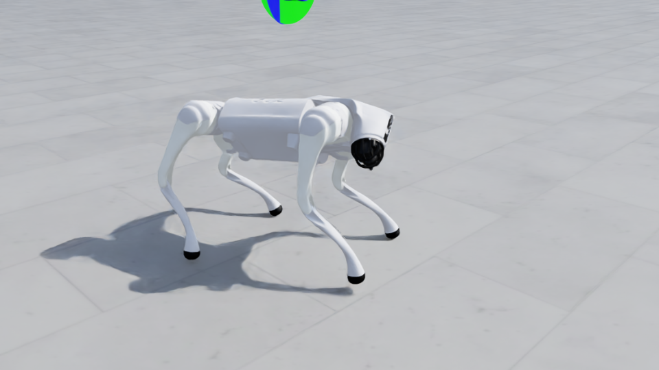
- Task
Unitree-Go2-Velocity- Commit
4960b84732b0- Steps
- 20 / 20
- Provenance
- advisory · required_asset_license_unverified
- Download the public, non-gated unitreerobotics/unitree_model dataset and configure UNITREE_MODEL_DIR.
- Materialize the Go2 Git LFS object before task creation.
- Frame the camera from robot.data.root_pos_w because terrain placement moved env_0 about 79 meters from the authored USD origin.
- Provenance advisory: The required unitree_model dataset exposes neither license metadata nor a license file, so redistribution rights are unverified.
- Provenance advisory: UNITREE_MODEL_DIR remains a literal source placeholder rather than an environment variable or package setting.
LeRobot SO101
liorbenhorin/lerobot_so101_teleop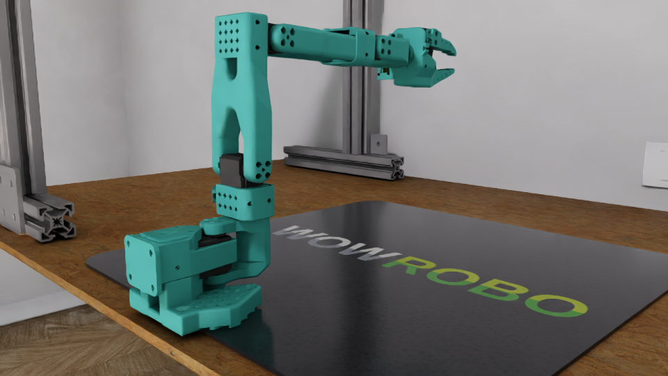
- Task
Lerobot-So101-Teleop-Base- Commit
9ea18b2c77df- Steps
- 5 / 5
- Provenance
- advisory · required_asset_license_unverified
- Materialize all 13 Git LFS assets and add the repository source directory to PYTHONPATH.
- Use the task-native viewer pose; a generic wide pose did not frame the arm.
- Provenance advisory: The repository attributes the SO101 USD to MuammerBay/so-arm101-ros2-bridge, which has no detected license or license file.
LeHome Garment v2
lehome-official/lehome-challenge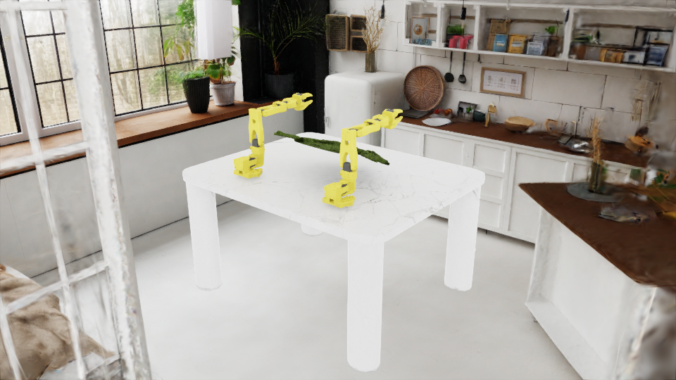
- Task
LeHome-BiSO101-Direct-Garment-v2- Commit
a805ad2f7ab5- Steps
- 5 / 5
- Provenance
- strict OSS closure
- Download and materialize the public Apache-2.0 lehome/asset_challenge dataset.
- Install plotly==6.5.2, pyserial==3.5, and deepdiff==8.6.1 without the full lerobot dependency set.
- Set cfg.garment_name=Top_Long_Unseen_0 before environment creation.
- Apply the recorded two-line GarmentObject first-reset compatibility patch.
- Upstream reset calls GarmentObject.reset before initialize on Isaac Sim 5.1; unpatched CUDA execution fails.
- Three of four registered task IDs reference Python modules absent from this commit; only the v2 task source is present.
- A full lerobot==0.4.3 install would change core NumPy, packaging, and protobuf versions and was deliberately not applied.
Basic Locomotion Go2
iit-DLSLab/basic-locomotion-isaaclab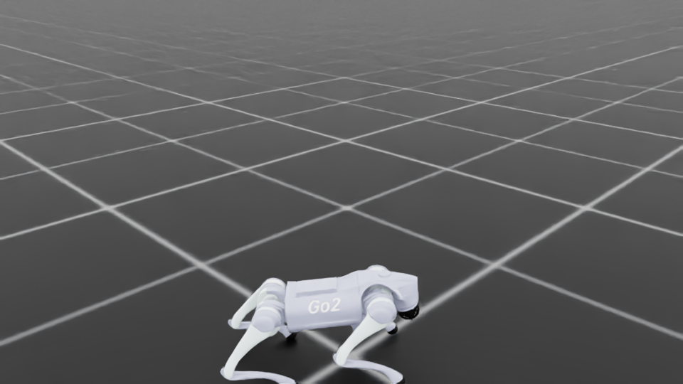
- Task
Locomotion-Go2-Flat- Commit
82f03e748ee5- Steps
- 10 / 10
- Provenance
- strict OSS closure
- Install the repository package and its declared Isaac Lab dependencies.
- Apply the recorded import-only aliases for the absent project-specific MultiMeshRayCasterCamera classes on stock Isaac Lab 2.3.x.
- Unpatched import fails before task registration because the repository expects custom sensor classes absent from stock Isaac Lab 2.3.x.
- The package metadata says Apache-2.0 while the root license and source headers say BSD-3-Clause.
- The zero-action screenshot proves composition and physics, not a trained locomotion policy.
Robot Identification Go2
iit-DLSLab/sim2real-robot-identification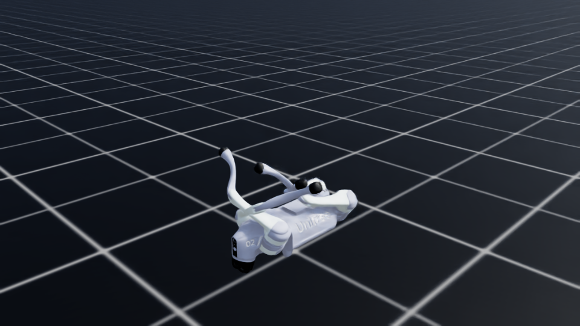
- Task
IsaacLab-Pace-Go2- Commit
091ac8845dfb- Steps
- 10 / 10
- Provenance
- strict OSS closure
- Initialize the pace-sim2real submodule at the recorded Apache-2.0 commit.
- Install the declared cmaes dependency; the probe used cmaes==0.13.0.
- The bundled Go2 model has no separate provenance notice beyond the repository BSD-3-Clause license.
- The zero-action screenshot proves task creation and physics, not identification quality or policy success.
Matterix Beakers
AccelerationConsortium/Matterix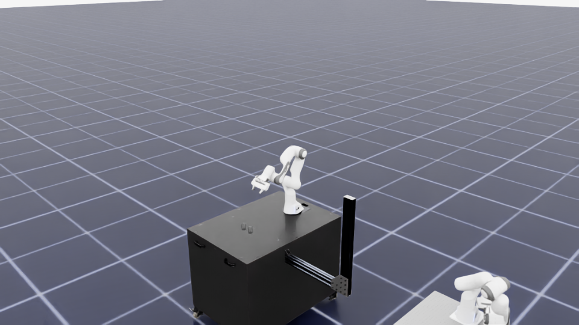
- Task
Matterix-Test-Beakers-Franka-v1- Commit
f36180bd4ffe- Steps
- 10 / 10
- Provenance
- advisory · required_asset_license_unverified
- Initialize Matterix_assets at the recorded commit and materialize all 14 Git LFS objects.
- Set MATTERIX_PATH to the repository root before importing Matterix packages.
- Provenance advisory: The required Matterix_assets repository exposes no detected license metadata or license file at the pinned commit.
- Provenance advisory: The matterix_assets Python package declares MIT while its source headers say BSD-3-Clause; neither declaration appears in the separate data submodule.
RLRoverLab ExoMy
abmoRobotics/RLRoverLab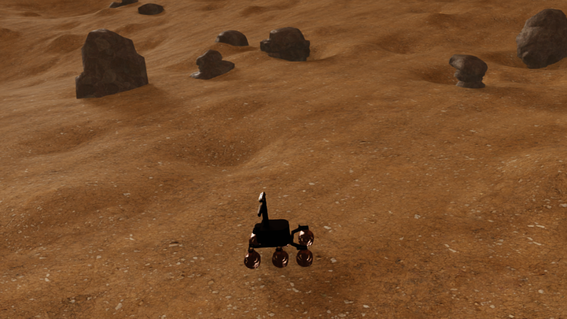
- Task
Exomy-v0- Commit
64aeb7849775- Steps
- 5 / 5
- Provenance
- advisory · required_asset_license_unverified
- Install pymeshlab==2025.7.post1, termcolor==3.3.0, and gdown==6.1.0.
- Download the documented Google Drive terrain archive and verify SHA-256 792dea9a62d2e5a339fe4faddf7eb6597e63c5a805145c88a7bf5be7889358fc.
- Extract the 62 required object and terrain files; the actual and expected manifests must match exactly.
- Provenance advisory: The required 779,695,564-byte terrain archive contains no license file, so redistribution and commercial-use rights are unverified.
- Provenance advisory: The package metadata says BSD-3-Clause while the root repository license is Apache-2.0.
LabUtopia Level 1 Pick
Rui-li023/LabUtopia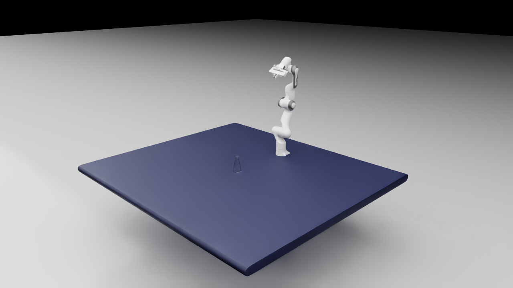
- Task
level1_pick- Commit
8df72784265c- Steps
- 10 / 10
- Provenance
- advisory · noncommercial_asset_terms_apply
- Materialize 472 Git LFS objects; the retained assets manifest contains 471 files.
- Provide zarr==3.1.5, numcodecs==0.16.5, donfig==0.8.1.post1, and google-crc32c==1.7.1 in an isolated overlay without replacing the baseline Torch stack.
- Use the bounded AgenticSim harness for reset, ten task steps, three native camera frames, and clean shutdown without starting the data-writer controller.
- Provenance advisory: The required data assets are CC BY-NC 4.0 and explicitly limited to research and educational use, so this is not an unrestricted open-source runtime closure.
- Provenance advisory: The upstream --headless argument is parsed but ignored by a hardcoded headless=False launch configuration.
- Provenance advisory: The upstream default config name does not match any config filename.
- Provenance advisory: The original controller factory eagerly imports local policy dependencies even in collect mode.
- Provenance advisory: An external timeout of the original parallel HDF5 writer can terminate inside native signal handling; the bounded harness avoids that shutdown path.
Acceptance Audit
Eight requirements mapped to concrete evidence.
| # | Requirement | Status | Primary evidence |
|---|---|---|---|
| 01 | Define /gen-env, /collect, /train, /evaluate, /diagnose, and /transfer inputs, outputs, artifact paths, owners, and failure codes. | pass | artifacts/openxsim/openxsim_command_registry.json |
| 02 | Cover selection2env, forge fallback, and material sidecar fields in the /gen-env schema. | pass | schemas/gen_env.schema.json |
| 03 | Run two or three RoboTwin single-task command-loop smokes. | pass | artifacts/openxsim_benchmarks/manifest.json |
| 04 | Write run_state, events, scene/task manifests, rollout logs, failure diagnosis, and next data requirement for each benchmark. | pass | artifacts/openxsim_benchmarks/open_laptop/benchmark_manifest.json |
| 05 | Run or explicitly block one forge fallback and one material-sidecar fallback with import and validation gates. | pass | artifacts/generation_fallback/blocked_drawer_mug_video2sim_forge.json |
| 06 | Cover six dense diagnosis categories beyond success rate. | pass | artifacts/openxsim_benchmarks/*/failure_diagnosis.json |
| 07 | Provide an Open X Sim adapter matrix with engine/renderer, formats, materials, APIs, license/access, and migration difficulty. | pass | artifacts/openxsim/openxsim_adapter_matrix.json |
| 08 | Record Zheng Ye, Gaochen, and Boris ownership boundaries. | pass | artifacts/openxsim/openxsim_command_registry.json#owner_split |
Command Registry
Inputs, outputs, artifact roots, owners, and failure codes.
/gen-env
Zheng Yesupport: Boris
Inputs
task_textreference_image_or_rgbd_or_videoasset_catalog_rootsallowed_simulator_adaptersrobot_constraints
Outputs
route_contractscene_manifesttask_manifestasset_manifestmaterial_sidecar_or_typed_blockervalidation_plan
Failure codes
ASSET_CATALOG_MISSROBOTWIN_ROOT_MISSINGSIM_IMPORT_FAILVISUAL_REVIEW_REQUIREDGENERATION2ENV_DEFERREDFORGE_CAPTURE_SOURCE_MISSINGFORGE_IMPORT_ARTIFACT_MISSINGMATERIAL_MULTIVIEW_INPUT_MISSINGMATERIAL_RENDER_BINDING_MISSINGCurrent evidence
artifacts/gen_env_contract/gen_env_contract_manifest.jsonartifacts/scene_task_decoupling/apple_plate_two_tasks.jsonruns/isaac_openxsim_place_container_plate_v1/gen_env.json
[KNOWN][CONFIDENCE: HIGH]The selection2env route executes with existing assets, and one Isaac primitive-proxy scene executes. Forge and neural-material routes remain separate and are not implied by the Isaac result.
/collect
Zheng Yesupport: Gaochen
Inputs
accepted_scene_manifesttask_manifestpolicy_or_scripted_expertsimulator_adapterrollout_count_and_seed_plan
Outputs
rollout_logsobject_state_tracesaction_tracescamera_previews_and_videodataset_manifestdiagnosis_seed_records
Failure codes
SCENE_LOAD_FAILRESET_FAILROLLOUT_CRASHVERIFIER_TIMEOUTMISSING_CAMERA_TRACECurrent evidence
runs/generated_collect_apple_plate_native_sync/collection_report.jsonartifacts/openxsim_benchmarks/manifest.jsonartifacts/openxsim/openxsim_video_frame_uniqueness.jsonruns/isaac_openxsim_place_container_plate_v1/collect.json
[KNOWN][CONFIDENCE: HIGH]Official benchmark bundles use scripted RoboTwin experts; learned-policy evidence is tracked separately.
/train
Gaochensupport: Boris
Inputs
rollout_dataset_manifesttraining_recipepolicy_base_checkpointdata_requirement_filters
Outputs
checkpointtraining_logdata_coverage_reportfailure_to_data_linkage_report
Failure codes
DATA_MANIFEST_INVALIDTRAIN_DATA_FORMAT_BLOCKEDPOLICY_DEPENDENCY_MISSINGGPU_OOMCHECKPOINT_WRITE_FAILPOLICY_INTERFACE_MISMATCHCurrent evidence
runs/act_train_native_sync_rgb_chunk161_1200e/train_smoke_report.jsonruns/policy_train_eval_entrypoint_probe/probe_report.json
[KNOWN][CONFIDENCE: HIGH]The generated-task adapter trains successfully; default upstream RoboTwin ACT wrapper compatibility remains separately blocked.
/evaluate
Gaochensupport: Boris
Inputs
checkpointeval_task_setverifier_definitionssimulator_or_real_execution_mode
Outputs
eval_resultsper_task_tracessuccess_failure_labelsregression_reportnext_data_requirement
Failure codes
EVAL_TASK_LOAD_FAILEVAL_TASK_ENV_MISSINGPOLICY_LOAD_FAILVERIFIER_CONTRADICTIONREGRESSION_DETECTEDCurrent evidence
runs/act_eval_native_sync_rgb_chunk161_1200e_best/evaluate_report.jsonartifacts/diagnosis/placement_robustness_diagnosis.jsonruns/isaac_openxsim_place_container_plate_v1/evaluate.jsonartifacts/sceneagent_policy_promotion/pose_conditioned_policy_promotion_v1.json
[KNOWN][CONFIDENCE: HIGH]The earlier RoboTwin ACT recovery remains rejected at 1/4 varied-placement success. A separate privileged pose-conditioned open-loop policy passes its bounded 4/4 held-out, 4/4 randomized, and 3/3 second-task gates. Isaac has one successful scripted object-space target verifier. None establishes a robust visual cross-simulator learned policy.
/diagnose
Borissupport: Zheng Ye / Gaochen
Inputs
rollout_tracessimulator_stateobject_posesarm_motiongripper_statevisual_observations
Outputs
failure_clusterroot_cause_hypothesisdense_category_verdictsnext_data_requirementproposed_harness_edit
Failure codes
DIAGNOSIS_INPUT_MISSINGSTATE_TRACE_INCOMPLETEFAILURE_CLUSTER_UNRESOLVEDVISUAL_MATERIAL_REVIEW_MISSINGCurrent evidence
artifacts/openxsim_benchmarks/open_laptop/failure_diagnosis.jsonruns/act_eval_native_sync_rgb_chunk161_1200e_best/evaluate_report.jsonruns/isaac_openxsim_place_container_plate_v1/diagnose.json
[KNOWN][CONFIDENCE: HIGH]Dense categories are evaluated from available traces; a not-observed verdict is not proof that a failure mode is impossible.
/transfer
Zheng Yesupport: Boris
Inputs
external_environment_sourceadapter_metadataasset_formatmaterial_systemreset_step_verifier_api
Outputs
adapter_manifestmigration_blocker_listsmoke_commandlicense_access_noteverifier_mapping
Failure codes
ADAPTER_SOURCE_UNAVAILABLELICENSE_ACCESS_UNRESOLVEDASSET_FORMAT_UNSUPPORTEDRESET_STEP_API_UNMAPPEDVERIFIER_API_UNMAPPEDMATERIAL_BINDING_UNSUPPORTEDTRANSFER_SMOKE_FAILCurrent evidence
artifacts/openxsim/openxsim_adapter_matrix.jsonartifacts/adapter_catalog/robotwin_discovered_catalog.jsonartifacts/openxsim/agenticsim_awesome_isaac_snapshot.jsonartifacts/openxsim_cross_sim/place_container_plate_task_contract.jsonruns/isaac_openxsim_place_container_plate_v1/transfer.json
[KNOWN][CONFIDENCE: HIGH]Isaac Sim now has one executed task-semantic command bundle with primitive proxies and a target verifier. Robot embodiment, joint-action policy, source assets/materials, and learned-policy transfer are explicitly not transferred.
RoboTwin Loop Smokes
Actual frames and bundled observer videos.
open_laptop
robotwin_open_laptop_seed_0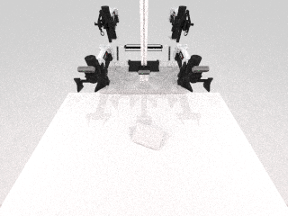
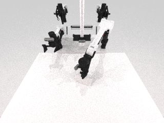
- Loop
- /gen-env → /collect → /diagnose → /evaluate
- Video
- 640 decoded frames · 640 unique · 12 fps · 53.3333 s
- Capture
- continuous simulator-step sampling · stride 4
- Verifier
- official RoboTwin check_success = true
- Policy
- scripted expert; learned_policy=false
Promote from official RoboTwin task smoke to generated selection2env play_once and policy /train-/evaluate integration.
place_mouse_pad
robotwin_place_mouse_pad_seed_0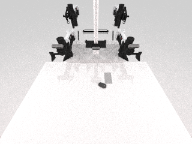
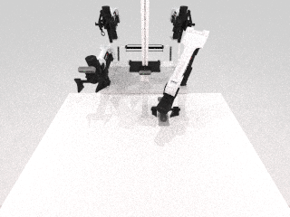
- Loop
- /gen-env → /collect → /diagnose → /evaluate
- Video
- 531 decoded frames · 531 unique · 12 fps · 44.25 s
- Capture
- continuous simulator-step sampling · stride 4
- Verifier
- official RoboTwin check_success = true
- Policy
- scripted expert; learned_policy=false
Promote from official RoboTwin task smoke to generated selection2env play_once and policy /train-/evaluate integration.
place_container_plate
robotwin_place_container_plate_seed_0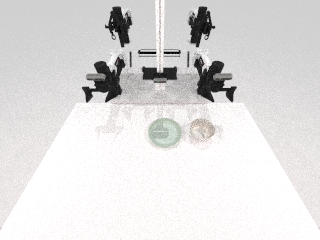
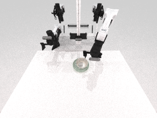
- Loop
- /gen-env → /collect → /diagnose → /evaluate
- Video
- 527 decoded frames · 527 unique · 12 fps · 43.9167 s
- Capture
- continuous simulator-step sampling · stride 4
- Verifier
- official RoboTwin check_success = true
- Policy
- scripted expert; learned_policy=false
Promote from official RoboTwin task smoke to generated selection2env play_once and policy /train-/evaluate integration.
Fallback Gates
Explicit blockers are acceptance-compliant; execution is not claimed.
video2sim_forge
blocked missing inputsThis is a machine-readable blocker for the missing-asset forge fallback. It does not claim video2sim-forge execution or generated asset validity.
importblocked missing forge artifact
scaleblocked missing forge artifact
collisionblocked missing forge artifact
supportblocked missing forge artifact
materialblocked missing forge artifact
renderblocked missing forge artifact
verifierblocked missing forge artifact
Next: Attach one drawer/mug RGB-D or reference-video package, then run forge output through scale, collision, support, material, SAPIEN import, and verifier gates.
neumatex_material_sidecar
blocked missing inputsThis is a machine-readable blocker for the material sidecar route. It does not claim NeuMaTeX execution or material fidelity.
importblocked missing geometry input
scaleblocked missing geometry input
collisionblocked missing geometry input
supportblocked missing geometry input
materialblocked missing multiview input
renderblocked missing renderer binding
verifierblocked missing render evidence
Next: Pick one accepted generated or Articraft asset, provide calibrated multi-view or rendered captures, extract a material sidecar, and run SAPIEN render/visual checks.
Reference Sources
Bundled official-page snapshots for both Awesome Isaac lists and both fallback references.
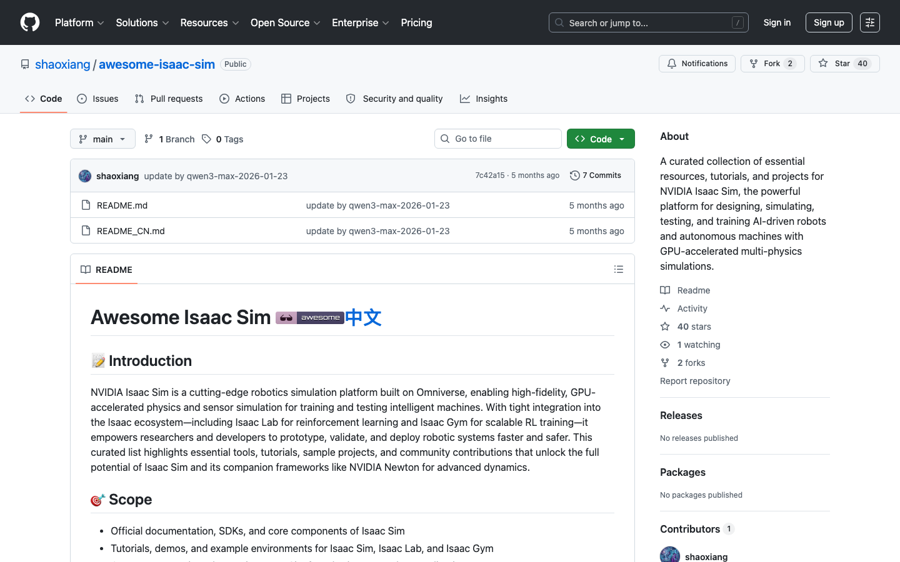
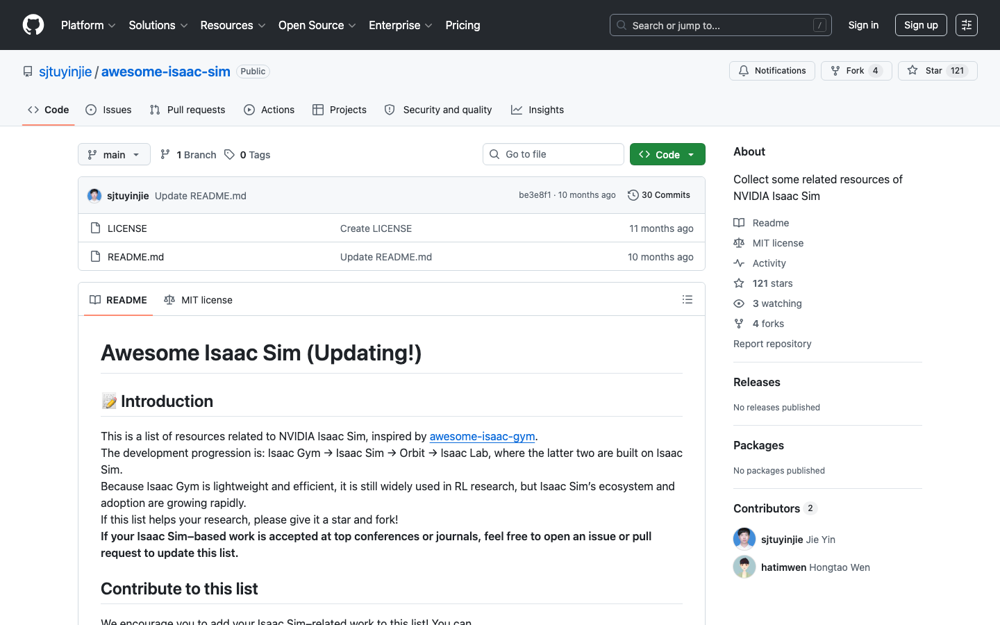
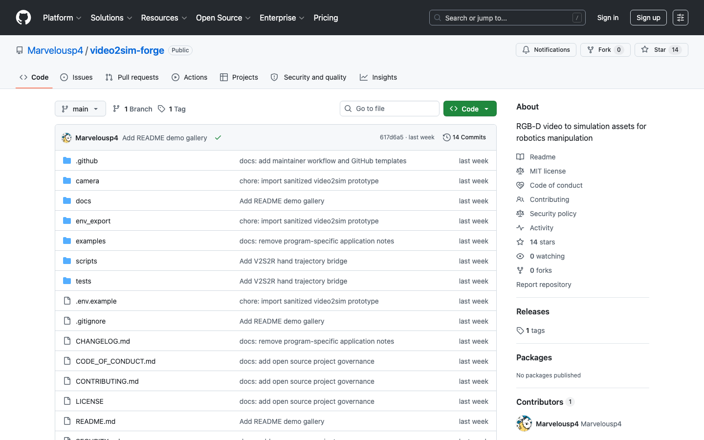
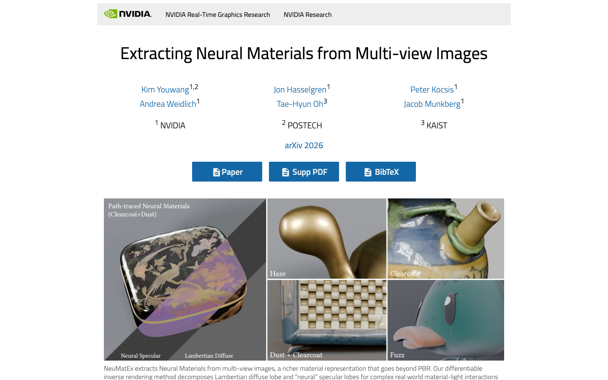
Open X Sim Adapter Matrix
RoboTwin has robot-action benchmarks; Isaac has one bounded task-semantic five-command bundle plus runtime smokes.
| Source | Engine / renderer | Asset format | Material system | Reset / step / verifier | License / access | Migration difficulty | Status |
|---|---|---|---|---|---|---|---|
| RoboTwin / SAPIEN | SAPIEN physics and renderer | RoboTwin object directories, GLB/mesh files, model metadata, and task Python modules | SAPIEN render materials and texture files attached through RoboTwin asset metadata | setup_demo/reset through Base_Task; scripted or policy actions through task methods; task.check_success verifier | Public RoboTwin repository with MIT license; backend assets remain subject to their recorded provenance | Baseline P0 backend; remaining difficulty is generated-task registration and robust policy coverage | P0_executed |
| LV-Robotics-Lab/AgenticSim Open X Sim intake | Isaac Sim 5.1 / Isaac Lab 2.3 runtime plus the RoboTwin / SAPIEN alias source | 745-repository source catalog, USD task assets, and eight RoboTwin-backed alias records | USD/MDL for Isaac candidates and inherited SAPIEN materials for RoboTwin-backed aliases | Twelve exact-commit probes exercise task registration, reset, 5-20 steps, stage inspection, and viewport capture; 11 pass technically, while the full PEARL verifier mapping remains separate | Six tested code-and-asset paths close under open-source terms; five technical passes remain blocked by missing or noncommercial required-asset licensing; WobbleGo is runtime-blocked | Normalize task registration, dependencies, Git LFS or remote assets, observations, licensing, and task verifiers before promotion into the full command loop | P1_agenticsim_runtime_intake_12_probes |
| Articraft-10K | Generated articulated assets probed through SAPIEN | Searchable metadata plus per-asset tar.gz archives containing URDF geometry | Archive-provided visual meshes and textures where present; no NeuMaTeX sidecar binding | Archive extraction and SAPIEN load/20-step smoke; no task-level verifier adapter | Public Hugging Face dataset access; per-asset and dataset usage terms must be checked before promotion | Scale, collision geometry, articulation semantics, materials, and task suitability vary by asset | P1_catalog_with_bounded_smoke |
| NVIDIA Isaac Sim / USD | PhysX with Omniverse RTX rendering | USD scene graphs and referenced meshes | USD material bindings with MDL/Omniverse material workflows | The RTX baseline and 11 named task smokes pass; one normalized place_container_plate task now executes Isaac /gen-env, /collect, /evaluate, /diagnose, and /transfer with a target geometric verifier | Isaac Sim 5.1 runs under NVIDIA access terms; every candidate repository and required asset is audited separately, leaving five runnable candidates outside strict open-source intake | Extend the executed primitive-proxy task-semantic bundle to robot embodiment, source assets/materials, policy actions, and additional task-specific verifiers | P1_executed_normalized_task_bundle |
| MuJoCo | MuJoCo physics with its native renderer | MJCF/XML with mesh and texture references | MJCF material, texture, and RGBA attributes | Core state reset and simulation step exist; PEARL task/verifier mapping is not implemented | Public open-source repository; exact dependency and asset licenses must be recorded per adapter bundle | SAPIEN-to-MJCF articulation, contact parameters, camera conventions, and verifier semantics | P2_target_not_run |
| LIBERO | MuJoCo through robosuite-style environments | Benchmark task definitions, BDDL, MJCF/XML, meshes, and textures | MuJoCo/robosuite visual materials and textures | Benchmark environment reset/step and task success checks require a PEARL adapter | Public repository; benchmark assets and dependency terms must be audited before transfer | Task language, BDDL semantics, object naming, observations, and success predicates differ from RoboTwin | P2_target_not_run |
| robosuite | MuJoCo with robosuite rendering wrappers | MJCF/XML, meshes, textures, arena and object classes | MuJoCo materials and robosuite texture assets | Environment reset/step APIs exist; task-specific success predicates need normalized verifier manifests | Public repository; asset and dependency licenses must be included in a transfer manifest | Robot controller/action spaces, camera observations, object registries, and success predicates need translation | P2_target_not_run |
| BEHAVIOR / OmniGibson | OmniGibson on Omniverse/PhysX | OmniGibson scene and object assets with USD-backed representations | Omniverse/USD material bindings and dataset-provided appearance assets | Activity reset/step and predicate evaluation need a PEARL verifier adapter | Public project and dataset access; dataset and simulator usage terms must be recorded before import | Large-scene state, semantic predicates, USD materials, robot embodiment, and activity verifier mapping | P2_target_not_run |
Owner Split
Execution ownership remains explicit.
| Owner | Responsibility |
|---|---|
| Zheng Ye | /gen-env · /transfer · /collect scene/task execution |
| Gaochen | /train · /evaluate · /collect data-interface compatibility |
| Boris | architecture · /diagnose schema · Dashboard and proposal alignment |
Evidence Files
Machine-readable package, QA, source catalog, runtime reports, screenshots, logs, asset hashes, and patches.
Command registryAdapter matrixAcceptance auditBenchmark manifestIsaac command bundleIsaac transfer mappingNormalized task contract1,730 unique decoded legacy videosAgenticSim snapshot12-probe runtime evidence745-repository catalogAgenticSim intake queueHuman-readable Isaac auditBasic Locomotion patchLeHome patchLabUtopia smoke reportRLRover archive hashSource capture manifestBrowser QADesktop QA screenshotMobile QA screenshotComplete bundle manifestMarkdown command spec
{kind=link}
{kind=link}